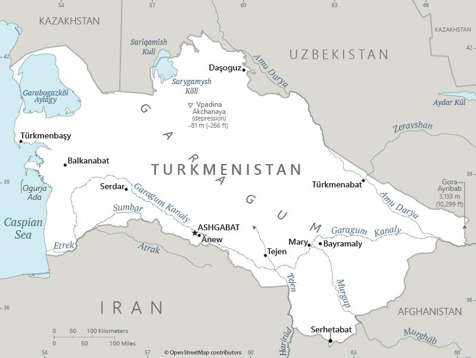

Genel Bilgiler
Türkmenistan, Orta Asya’da yer alan üniter bir cumhuriyettir. Başkenti Aşkabat’tır. Yaklaşık 6 milyon nüfusa sahiptir. Resmî dili Türkmence’dir ve para birimi Türkmenistan Manatı (TMT)’dır. Türkmenistan, zengin doğal gaz rezervleri ile ekonomik olarak önemli bir konuma sahiptir.
Türkmenistan, kuzeyde Kazakistan ve Özbekistan, doğuda Özbekistan ve Afganistan, güneyde İran, batıda Hazar Denizi ile çevrilidir. Yüzölçümü yaklaşık 491.210 km²’dir. Ülke coğrafyası çoğunlukla çöl ve yarı çöl alanlarından oluşur; önemli nehirleri Amu Derya’dır.
Başkent: Aşkabat
Kıta: Asya
Yüzölçümü: 488.100 km²
Nüfus (2025): 6.0 milyon

Bayrak Anlamı: Türkmenistan bayrağı yeşil zemin üzerinde kırmızı dikey bir şerit ve beş yıldız ile ay yıldız sembollerini içerir. Yeşil İslam’ı, kırmızı cesareti, yıldızlar ve ay ise bağımsızlığı ve ulusal birliği simgeler. Bayrak 1992 yılında kabul edilmiştir.
Türkmenistan Haritası
Ekonomi
Türkmenistan ekonomisi büyük ölçüde doğal gaz ve petrol ihracatına dayanır. Tarım sektörü pamuk ve tahıl üretimi ile önemlidir. Sanayi alanında enerji işleme, kimya ve hafif sanayi faaliyetleri öne çıkar. Hizmet sektörü ise sınırlıdır; turizm ve ticaret giderek gelişmektedir. Ülke, Orta Asya’nın enerji kaynakları açısından stratejik öneme sahiptir.
| Yıl | İhracat (Milyar $) | İthalat (Milyar $) |
|---|---|---|
| 2019 | 10 | 6 |
| 2020 | 9 | 5 |
| 2021 | 11 | 7 |
| 2022 | 12 | 8 |
| 2023 | 13 | 9 |